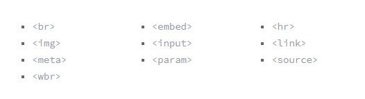
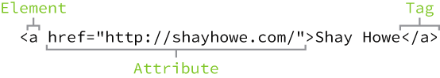

HTML, HyperText Markup Language, gives content structure and meaning by defining that content as, for example, headings, paragraphs, or image. We are going to study HTML5. All the updates in HTML5 are managed by a coperation between W3C(World Wide Web consortium) and WHATWG(Web application technology working group).
Common HTML terms
Elements
Elements are designators that define the structure and content of objects within a page. Some of the more frequently used elements include multiple levels of headings (identified as <h1> through <h6> elements) and paragraphs (identified as the <p>element); the list goes on to include the <a>, <div>, <span>, <dtrong>, and <em> elements, and many more.
Self closing elements
Not all elements consist of opening and closing tags. Some elements simply receive their content or behavior from attribute
s within a single tag.

Some self closing tags
Tags
The use of less-than and greater-than angle brackets surrounding an element creates what is known as a tag. Tags most commonly occur in pairs of opening and closing tags.The content that falls between the opening and closing tags is the content of that element
Attributes
Attributes are properties used to provide additional information about an element. The most common attributes include the id attribute, which identifies an element; the class attribute, which classifies an element; the src attribute, which specifies a source for embeddable content; and the href attribute, which provides a hyperlink reference to a linked resource
Attributes are defined within the opening tag, after an element’s name. Generally attributes include a name and a value. The format for these attributes consists of the attribute name followed by an equals sign and then a quoted attribute value.

Code Validators
No matter how careful we are when writing our code, we will inevitably make mistakes. Thankfully, when writing HTML and CSS we have validators to check our work. The W3C has built both HTML and CSS validators that will scan code for mistakes. Validating our code not only helps it render properly across all browsers, but also helps teach us the best practices for writing code.
Semantics
Semantics within HTML is the practice of giving content on the page meaning and structure by using the proper element. Semantic code describes the value of content on a page, regardless of the style or appearance of that content. There are several benefits to using semantic elements, including enabling computers, screen readers, search engines, and other devices to adequately read and understand the content on a web page. <div> and <span> doesnot hold any sementic value.
Block and Inline elements
Difference between Block and Inline elements
S.no
Block elements
Inline elements
1.
Block-level elements begin on a new line, stacking one on top of the other, and occupy any available width.
Inline-level elements do not begin on a new line. They fall into the normal flow of a document, lining up one after the other, and only maintain the width of their content.
2.
Block-level elements may be nested inside one another and may wrap inline-level elements.
Inline-level elements may be nested inside one another; however, they cannot wrap block-level elements.
3.
We’ll most commonly see block-level elements used for larger pieces of content, such as paragraphs.
We’ll usually see inline-level elements with smaller pieces of content, such as a few words.
<div> is an block element while <span> is an inline element.
Both <div> and <span> are used to build web-design layout and design.
Text-based elements
Headings
Headings are block-level elements, and they come in six different rankings, <h1> through <h6>. Headings help to quickly break up content and establish hierarchy, and they are key identifiers for users reading a page. They also help search engines to index and determine the content on a page.
Headings should be used in an order that is relevant to the content of a page. The primary heading of a page or section should be marked up with an <h1> element, and subsequent headings should use <h2>, <h3>, <h4>, <h5>, and <h6> elements as necessary.
Each heading level should be used where it is semantically valued, and should not be used to make text bold or big—there are other, better ways to do that.
Paragraphs
Headings are often followed by supporting paragraphs. Paragraphs are defined using the <p> block-level element. Paragraphs can appear one after the other, adding information to a page as desired. Here is an example of how to set up paragraphs.
Bold Text with Strong
To make text bold and place a strong importance on it, we’ll use the <strong> inline-level element. There are two elements that will bold text for us: the <strong> and <b> elements. It is important to understand the semantic difference between the two.
The <strong> element is semantically used to give strong importance to text, and is thus the most popular option for bolding text. The <b> element, on the other hand, semantically means to stylistically offset text
Italicize Text with Emphasis
To italicize text, thereby placing emphasis on it, we’ll use the <em> inline-level element. As with the elements for bold text, there are two different elements that will italicize text, each with a slightly different semantic meaning.
The <em> element is used semantically to place a stressed emphasis on text; it is thus the most popular option for italicizing text. The other option, the <i> element, is used semantically to convey text in an alternative voice or tone
Building structure
For the longest time the structure of a web page was built using divisions. The problem was that divisions provide no semantic value, and it was fairly difficult to determine the intention of these divisions. Fortunately HTML5 introduced new structurally based elements, including the <header>, <nav>, <article>, <section>, <aside>, and <footer> elements.
Structure of a HTML page
Header
The <header> element, like it sounds, is used to identify the top of a page, article, section, or other segment of a page. In general, the <header> element may include a heading, introductory text, and even navigation.
<header> vs. <head> vs. <h1> through <h6> Elements
It is easy to confuse the <header> element with the <head> element or the heading elements, <h1> through <h6>. They all have different semantic meanings and should be used according to their meanings. For reference…
The <header> element is a structural element that outlines the heading of a segment of a page. It falls within the <body> element.
The <head> element is not displayed on a page and is used to outline metadata, including the document title, and links to external files. It falls directly within the <html> element.
Heading elements, <h1> through <h6>, are used to designate multiple levels of text headings throughout a page.
Navigation
The <nav> element identifies a section of major navigational links on a page. The <nav> element should be reserved for primary navigation sections only, such as global navigation, a table of contents, previous/next links, or other noteworthy groups of navigational links.
Most commonly, links included within the <nav> element will link to other pages within the same website or to parts of the same web page. Miscellaneous one-off links should not be wrapped within the <nav> element; they should use the anchor element, <a>, and the anchor element alone.
Article
The <article> element is used to identify a section of independent, self-contained content that may be independently distributed or reused. We’ll often use the <article> element to mark up blog posts, newspaper articles, user-submitted content, and the like.
When deciding whether to use the <article> element, we must determine if the content within the element could be replicated elsewhere without any confusion. If the content within the <article> element were removed from the context of the page and placed, for example, within an email or printed work, that content should still make sense.
Section
The <section> element is used to identify a thematic grouping of content, which generally, but not always, includes a heading. The grouping of content within the <section> element may be generic in nature, but it’s useful to identify all of the content as related.
The <section> element is commonly used to break up and provide hierarchy to a page.
Deciding Between <article>, <section>, or <div> Elements
At times it becomes fairly difficult to decide which element— <article>, <section>, or <div>—is the best element for the job based on its semantic meaning. The trick here, as with every semantic decision, is to look at the content. Both the <article> and <section> elements contribute to a document’s structure and help to outline a document. If the content is being grouped solely for styling purposes and doesn’t provide value to the outline of a document, use the <div> element. If the content adds to the document outline and it can be independently redistributed or syndicated, use the <article> element. If the content adds to the document outline and represents a thematic group of content, use the <section> element.
Aside
The <aside> element holds content, such as sidebars, inserts, or brief explanations, that is tangentially related to the content surrounding it. When used within an <article> element, for example, the <aside> element may identify content related to the author of the article.
We may instinctively think of an <aside> element as an element that appears off to the left or right side of a page. We have to remember, though, that all of the structural elements, including the <aside> element, are block-level elements and as such will appear on a new line, occupying the full available width of the page or of the element they are nested within, also known as their parent element.
Footer
The <footer> element identifies the closing or end of a page, article, section, or other segment of a page. Generally the <footer> element is found at the bottom of its parent. Content within the <footer> element should be relative information and should not diverge from the document or section it is included within.